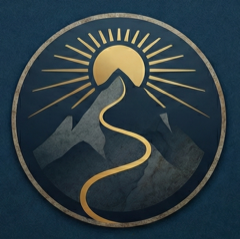
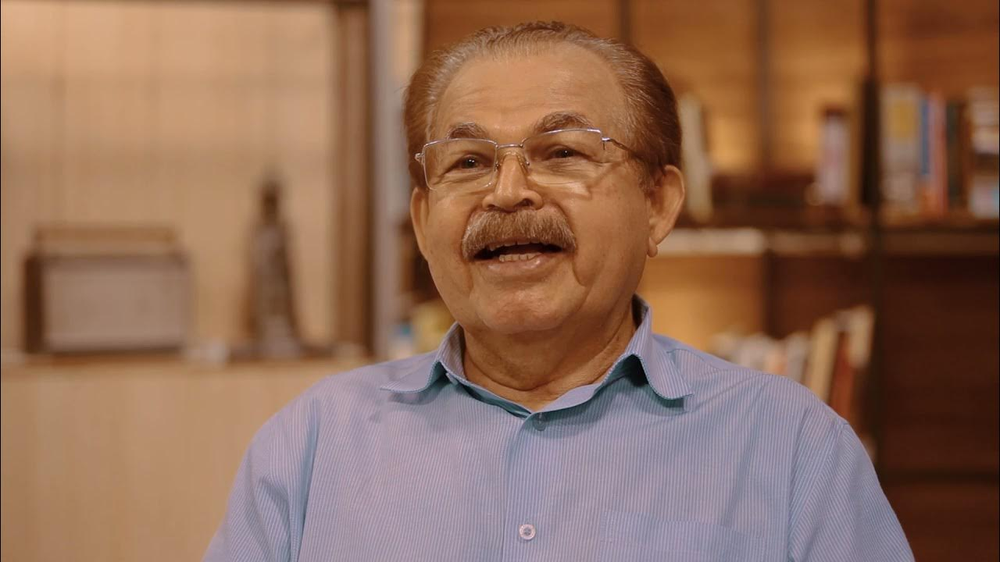
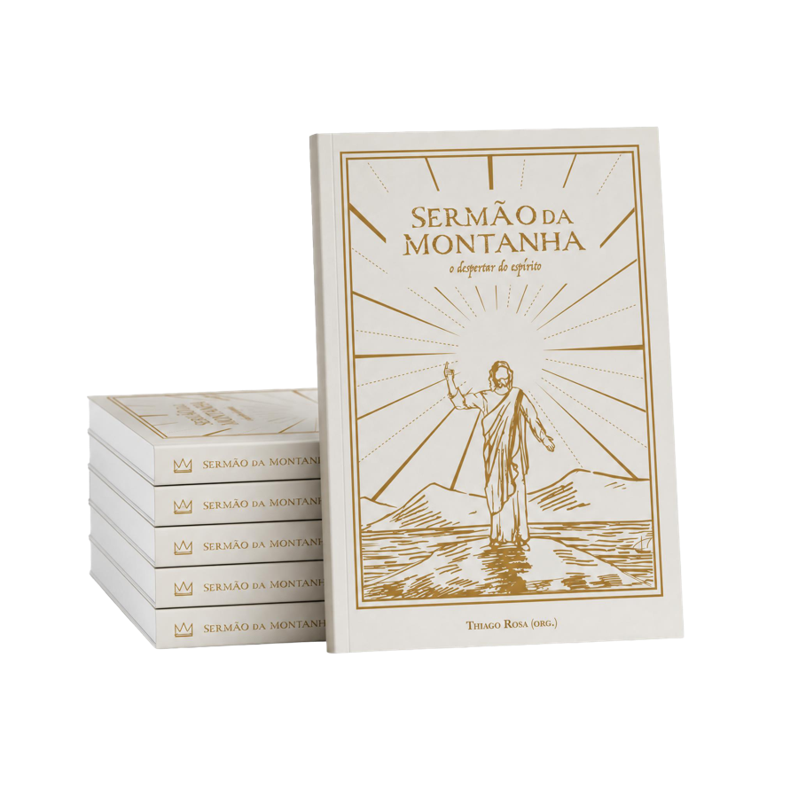

As Raízes
Onde tudo começa: quem foi Jesus como mestre, e por que esse ensinamento atravessou dois mil anos intacto.

Sermão da Montanha · O Despertar do Espírito
Prepare-se para uma jornada espiritual rumo ao desenvolvimento de suas virtudes — um passo, uma transformação de cada vez.
Começar a jornada ↓O roteiro · 9 marcos · uma ascensão
Não é falta de fé. É que a trilha foi sendo coberta — por traduções, repetições, dogmas — até parecer que o topo não existia mais. Mas ele existe, e o caminho nunca deixou de estar lá.
Cada capítulo é uma parada na montanha — uma virtude que se conquista antes de seguir para a próxima. Esta é a trilha completa, feita um passo de cada vez.
A Trilha
Onde tudo começa: quem foi Jesus como mestre, e por que esse ensinamento atravessou dois mil anos intacto.
Ashirei não significa “feliz”. Significa “portador de luz”. A primeira virada da subida.
Descobrir o próprio valor — e a responsabilidade que vem com ele.
A ética que não envelhece: o que sustenta quem sobe quando o caminho aperta.
A oração mais conhecida do mundo, reencontrada palavra por palavra.
Soltar o peso que não sobe junto: ansiedade, posse, o que não importa.
O ar rarefeito das relações: empatia em vez de julgamento.
A passagem que separa quem desiste de quem chega. Discernimento e coragem.
O cume: fundar a vida sobre o que não desmorona. A vista que poucos alcançam.
A expedição
Sete pesquisadores e educadores espirituais conduzem essa ascensão — não para debater religião, mas para iluminar cada passo do caminho.

Autor de Analisando as Traduções Bíblicas. É ele quem reabre o texto original — o hebraico, o aramaico — e devolve ao ensinamento a força que ele tinha no alto daquele monte. É de Severino a revelação sobre Ashirei que reorienta toda a subida.
O cume · 2.700 m
O que muda em quem chega ao topo:
Quem já fez a subida
★★★★★“Sou espírita há mais de vinte anos e achei que conhecia bem o Sermão da Montanha. Quando o Severino explicou o que é Ashirei, precisei parar. Nunca tinha enxergado assim.”
★★★★★“Sou católico praticante. O capítulo do Pai Nosso me desarmou. Rezei essa oração a vida toda — e só aqui entendi o que estava dizendo.”
★★★★★“Não me encaixo em nenhuma religião, mas tenho uma busca séria. O documentário mais honesto que já vi sobre Jesus — sem dogma, só profundidade.”
★★★★★“Assisti com minha mãe, 71 anos, católica a vida toda. Nas Bem-aventuranças ela disse: ‘nunca ninguém me explicou assim’. Diz tudo.”
★★★★★“O capítulo sobre julgamento mudou algo em mim que não sei descrever. Chegou onde precisava chegar.”
★★★★★“Sou agnóstico. Comprei sem expectativa. Me surpreendi com a seriedade e o respeito pela inteligência de quem assiste. Não precisei ‘crer em nada’ para tirar muito valor.”
★★★★★“O último marco, sobre edificar sobre a rocha, foi o que mais ficou. Estou num momento de reconstrução e aquela imagem ganhou outro peso.”
Quanto mais alto, mais leve.
Além do topo
Este é o primeiro projeto digital do Núcleo Gaspar. Toda a receita sustenta suas obras beneficentes — mais de 1.000 pessoas já fizeram parte disso.
Ao subir, você abre a trilha para outros.
Sua expedição começa aqui
Três formas de percorrer a trilha do Sermão da Montanha — O Despertar do Espírito. No seu ritmo, do seu jeito.

O Livro
O livro do documentário — para levar a montanha com você a qualquer lugar.
A Expedição Completa
A subida inteira: os 9 marcos em vídeo e o livro na sua estante.
O Documentário
9 capítulos, 9 marcos. Acesso digital vitalício, no seu ritmo.
🔒 Pagamento seguro · Eduzz · 7 dias de garantia · Cada compra sustenta as obras do Núcleo Gaspar
Suba sem risco
7 dias de garantia incondicional. Se você sentir que não valeu, devolvemos 100% — sem perguntas.
Preparando a mochila
Para qualquer pessoa que queira percorrer o Sermão da Montanha em profundidade — independente de tradição religiosa. Católicos, evangélicos, espíritas e buscadores independentes encontram valor aqui.
Não. Os guias constroem o contexto do zero — quem foi Jesus como mestre, o que significa cada termo no original. Você não precisa saber nada antes de começar.
São 9 capítulos gravados, disponíveis imediatamente após a compra. Você assiste no seu ritmo, na ordem que preferir.
Vitalício. Uma vez adquirido, o acesso é seu para sempre — sem mensalidade, sem renovação.
Pela plataforma Eduzz, no navegador ou app. Funciona em computador, celular e tablet.
Cartão de crédito (parcelado), PIX e boleto. Processado pela Eduzz.
100% da receita é destinada às obras beneficentes do Núcleo Gaspar.
O topo espera por você
Não como obrigação. Como um reencontro com algo que sempre esteve aí dentro.
Começar a jornada ↓🔒 Compra segura · 7 dias de garantia · Sustenta as obras do Núcleo Gaspar